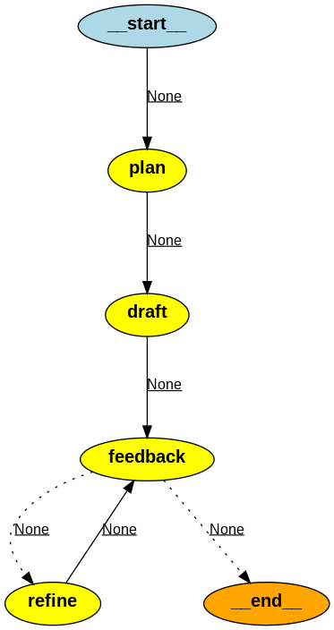

Overview
The background for this thought experiment is the renewal of large enterprise solutions with outdated technology and plenty of technical debt. Typically, such solutions will take years to modernize with a traditional approach and have high complexity and risk.
I believe it's possible to use LLMs in to speed up this modernization process.
The key is to break it down in smaller well-defined agentic workflows with intermediate ouput in both structured and unstructred form.
Let's do a thought experiment to modernize an example enterprise solution with a long history. The business logic is primarily in PL/SQL stored procedures in Oracle. In addition to the stored procedures there are table triggers and scheduled jobs in the database.
A thick client in a legacy framework is the front-end for users and it has a very tight coupling with the database.
Step 0 - Code dump
The initial step is to acquire a code dump of the solution.
This include:
- Table creation scripts with properties, keys and indexes
- Trigger definition scripts for tables
- Stored procedures code
- Scheduled jobs code
- Thick client code
It's quite clear that LLMs cannot processed the full code dump in a zero shot prompt fashion. Gemini is the model with the largest context window of 2 million token and will not be able to fit the code. Even if it was able to fit the code, the LLM would not be able to keep attention on the full data.
It's therefore necessary to split the code dump and therefore we need to think about the target architecture.
Step 1 - Target architecture
The target archiecture should be based on bounded context from Domain Driven Design.
This process will likely be mostly manual, although it's likely to get assistance based on human chat interface with LLMs.
Each bounded context will provide structured contracts to other bounded context and it's natural to represent these through the OpenAPI 3.1 standard (as used in REST APIs). Therefore, it's a goal to create the OpenAPI contract through LLMs in later steps.
Each bounded context should be well-defined with list of business capabilities and data entities it's responsible for. This will be provided as input to models in later stages.
Step 2 - Code packages
Within each bounded context, there must be defined code packages with smaller modules based on the code dump. The code package can be a combination of structured (for example in YAML or JSON format) and unstructured data (code lines). Ideally, each code package should be small (max ~64KB which is 50% of the context window of newest open models).
An open question is if you need additional data to perform the split of the code dump into code packages. Additional data may include:
- Log trace for executing a certain functions
- Example data for each table
Suggest that each file in the code dump has a corresponding classification file in structure format. LLMs can provide this classification through "tool/functions" and this was tested out in ora-stored-procedure-classification-langfuse.py. Here the input was a stored procedure and the output was:
{
'createsData': False,
'selectsData': True,
'updatesData': True,
'deletesData': False,
'tables': 'employees, departments'
}
Note: belongsToBoundedContext should be added to the output as well
Step 3 - Contracts for each bounded context
Creating the contracts for each bounded context would be next. This can likely be semi-automated with LLM models based on code packages.
The contract provides structure and can easily be unit tested as later steps will generate code.
Self-Refine: Iterative refinement with self-feedback is an important research agentic pattern suitable for this steps. LangGraph provides excellent support for well-defined workflows setup as cyclic graphs.
To provide the feedback we should use a tool and spectral-cli is perfect. With spectral it's possible to define custom ruleset in order to promote increased quality (such as requiring examples or operationId) or to ignore non essential warnings.
ora-tables-to-openapi-component.py is my experiment to verify that this approach works. This LangGraph node shows how this is implemented.
def node_feedback(state: AgentState):
# Write draft_code_block from earlier stage
with open('gen_openapi.yaml', 'w') as file:
file.write(state['draft_output_code_block'])
from langchain_experimental.llm_bash.bash import BashProcess
from langchain_community.tools import ShellTool
shell_tool = ShellTool(ask_human_input=False)
validationOutput = shell_tool.run({"commands": ["spectral lint gen_openapi.yaml"]})
return {
"feedback_output": validationOutput
}
This is the agentic workflow used in the example.

Step 4 - Implementation of contract
The implementation of the API can be done by combining the API contract and the relevant code package.
This is a complicate step and will require many iterations on a fit for purpose agentic workflow. It will likely also require a human in the loop to constantly improve the implementation.
The agentic workflow suggest Code Generation with AlphaCodium: From Prompt Engineering to Flow Engineering could be used for inspiration and it provides some interesting insights:
- Generating tests is easier than generating solution code
- YAML Structured output: the usage of structured output - asking the model to generate an output in YAML format, equivalent to a given Pydantic class - is a key component in our proposed flow
- when asking an LLM to reason about an issue, better results are obtained when demanding the output to be in bullet points format
- When clearly asking the model to: “divide the generated code into small sub-functions, with meaningful names and functionality”, we observe a better-produced code, with fewer bugs, and higher success rates for the iterative fixing stages
Step 5 - Constant refinment through unit tests
Once there is code which compiles and runs, the focus should be on constant refinement.
To provide feedback, unit test results should be key.
Human in the loop will likely be required.
Various notes for the experiments related to this area
Notes:
- Mistral-nemo:12b model was better than llama3.1:8B for this task
- Had to increase the context window from default 8KB to 32KB in order to avoid cut-offs (ref Modelfile)
- The models (including gpt-4o-mini) had a tendency to create full OpenAPI specification with endpoints, even though the prompt was focused on only components definition
- LangSmith was useful as a debugging tool to understand the graph flow. LangFuse is considered more open and verified it worked just as well.
- mdextractor was used to identify code blocks in the output (though it's probably better to avoid this dependency and use their regexp directly)
- Node names in LangGraph cannot be the same as properties in the AgentState
- Very easy to test different models
- Note sure how much the plan step helped as the models are generally good a defining OpenAPI specification 0-shot
- The bowling context of task sometimes made the model diverge to content not part of the initial Oracle table definition (might be possible to overcome by repeating the overall task context)
- Spectral could be used to add additional custom rules to promote improve the quality and the completness of the API contract (for example to require examples)
- Spectral warnings might have been good to remove from the output through a custom rule set.